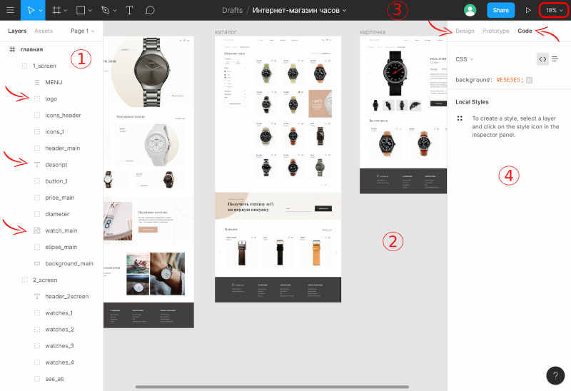

Старт в Figma для верстальщика
Figma — это графический онлайн-редактор для дизайнеров интерфейсов и веб-разработчиков. Сейчас это удобная, бесплатная альтернатива Photoshop. Большое преимущество платформы — возможность работать прямо в браузере. При этом есть и десктопная версия. Расскажем, что надо знать верстальщику при работе с макетом в Figma.
Регистрация и добавление нового макета
Чтобы начать пользоваться редактором, нужно зайти на сайт и зарегистрироваться. Можно войти через Google или просто создать аккаунт на сайте.

Структура макета и рабочие инструменты
Интерфейс в разделе работы с макетом состоит из нескольких блоков.
- В боковой панели слева показана вся структура проекта. Можно проследить вложенность элементов и найти нужный. Каждый тип элемента обозначен отдельной иконкой — текст, изображение, составной блок.
- Основная рабочая область в центре — для непосредственного взаимодействия с макетом.
- В верхней части страницы расположено основное меню. Большая часть инструментов в нём предназначены для дизайна, но вам точно пригодится меню масштабирования, расположенное справа.
- Боковая панель справа включает в себя три вкладки, но нам будут нужны только две из них — Design и Code. В этих вкладках находится вся доступная информация об элементе.
Работа с параметрами элементов
Основная задача верстальщика при работе с макетом — получить параметры элементов. Давайте разберём по пунктам, как это сделать в Figma.
Текст
Чтобы узнать все текстовые параметры, нужно выделить элемент и открыть вкладку Code в правой боковой панели. Там в списке свойств отобразятся все используемые параметры — название, размер, насыщенность и цвет шрифта, высота строки и остальные.
Изображение
Свойства width и height во вкладке Code расскажут о размере изображения.